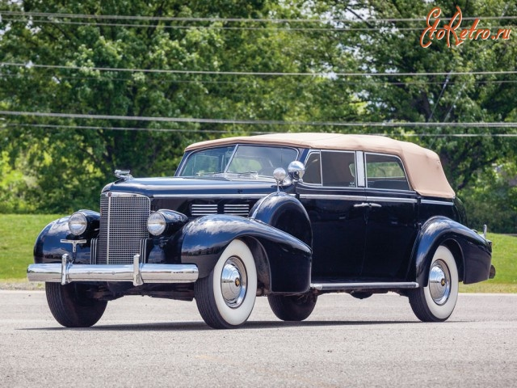

Перший Cadillac

Перший автомобіль, випущений під брендом "Cadillac", відомий як Cadillac Model A. Цей автомобіль
був представлений у 1902 році. Він був створений Генрі Леландом, засновником компанії Cadillac.
Cadillac Model A був автомобілем розкішного класу, що відзначався високою якістю і престижем. Він був
оснащений 1-циліндровим двигуном потужністю 10 кінських сил і мав розгін до швидкості близько 40 км/год.
Cadillac Model A відзначався інноваційними рішеннями та вишуканим дизайном. Цей автомобіль став символом
розкіші, комфорту та передових технологій в автомобільній індустрії. З того часу Cadillac продовжує
виробляти розкішні автомобілі, які вважаються еталоном комфорту і стилю. Бренд відомий своїм розкішним
дизайном, високою якістю виготовлення та передовими технологіями.